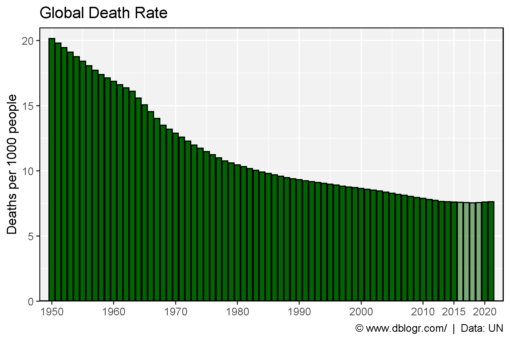

Prepare Data
# Prep data
xx <- read.csv("deaths_world_data.csv")
yy <- xx %>% filter(Year == 2020) %>% pull(Death.Rate)
xx <- xx %>% mutate(Group = ifelse(Death.Rate >= yy, "higher", "Lower"))
# Plot
mp <- ggplot(xx, aes(x = Year, y = Death.Rate, fill = Group)) +
geom_bar(stat = "identity", color = "black") +
scale_fill_manual(values = c("darkgreen", alpha("darkgreen",0.5))) +
scale_x_continuous(breaks = c(seq(1950, 2010, 10), 2015, 2020)) +
coord_cartesian(expand = 0, ylim = c(0,21), xlim = c(1948,2023)) +
theme_agData(legend.position = "none") +
labs(title = "Global Death Rate",
y = "Deaths per 1000 people", x = NULL,
caption = "\xa9 www.dblogr.com/ | Data: UN")
ggsave("world_deaths_01.png", mp, width = 6, height = 4)
# Prep data
xx <- read.csv("deaths_uk_data.csv") %>%
rename(Death.Rate = Crude.mortaity.rate..per.100.000.population.) %>%
mutate(Death.Rate = as.numeric(gsub(",", "", Death.Rate)))
yy <- xx %>% filter(Year == 2020) %>% pull(Death.Rate)
xx <- xx %>% mutate(Group = ifelse(Death.Rate >= yy, "higher", "Lower"))
# Plot
mp <- ggplot(xx, aes(x = Year, y = Death.Rate, fill = Group)) +
geom_bar(stat = "identity", color = "black", size = 0.1) +
scale_fill_manual(values = c("darkgreen", alpha("darkgreen",0.5))) +
scale_x_continuous(breaks = c(seq(1840, 1980, 20), 2003, 2020)) +
coord_cartesian(expand = 0, ylim = c(0,2600), xlim = c(1835,2023)) +
theme_agData(legend.position = "none") +
labs(title = "UK Death Rate", y = "Deaths per 100,000", x = NULL,
caption = "\xa9 www.dblogr.com/ | Data: BMJ")
ggsave("world_deaths_02.png", mp, width = 6, height = 4)ggsave("featured.png", mp, width = 6, height = 4)
© Derek Michael Wright 2020 www.dblogr.com/